Abstract
This study is dealing with wintering Cooper's Hawks (Accipiter cooperii) in urban environments. Using a multi-decadal dataset of sighting records, we used the sf and spatstat packages in R to handle spatial data and perform point pattern analysis. We performed Clark-Evans tests to determine degree of spatial clustering of observations. We factored temporal and sex clustering contemporary changes as well as variogram results in COHA observations into our models to account for pseudoreplication and overdispersed data. These maps are here to showcase my ability to code maps in R using the spatstat and sf packages.
Selected Figures
{kind=link}
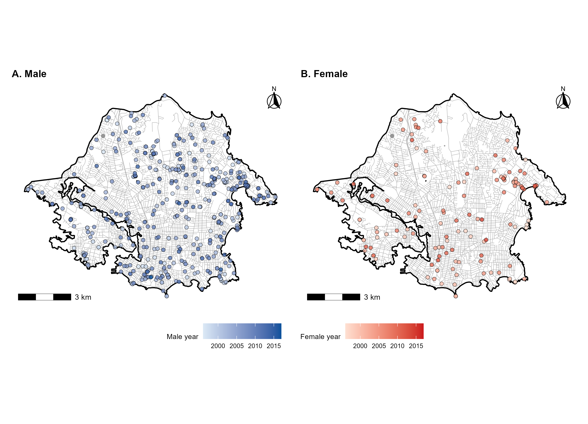
{kind=link}
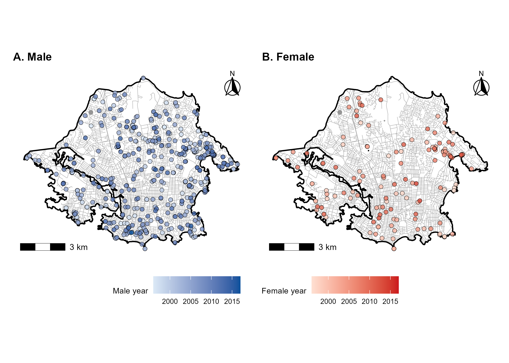
{kind=link}
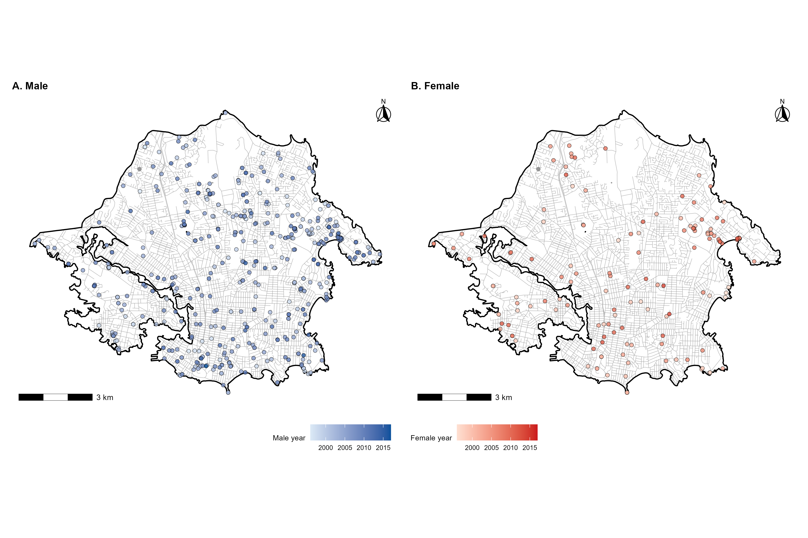
{kind=link}
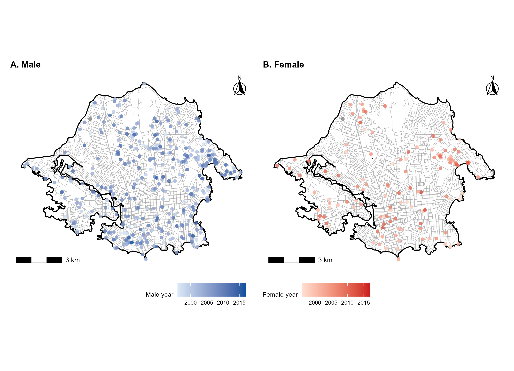
{kind=link}
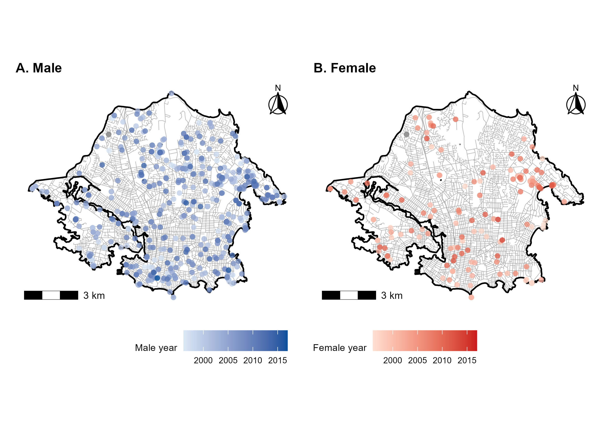
{kind=link}
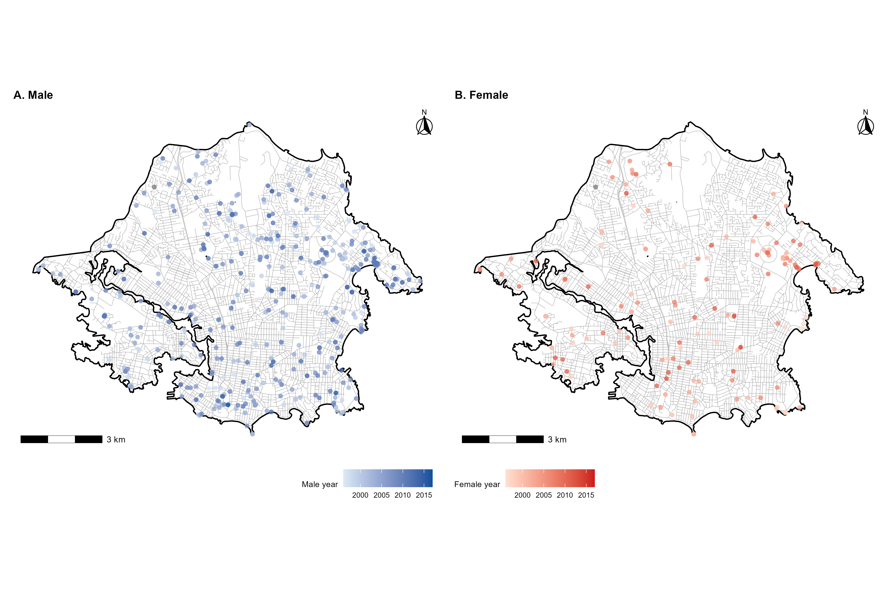
{kind=link}
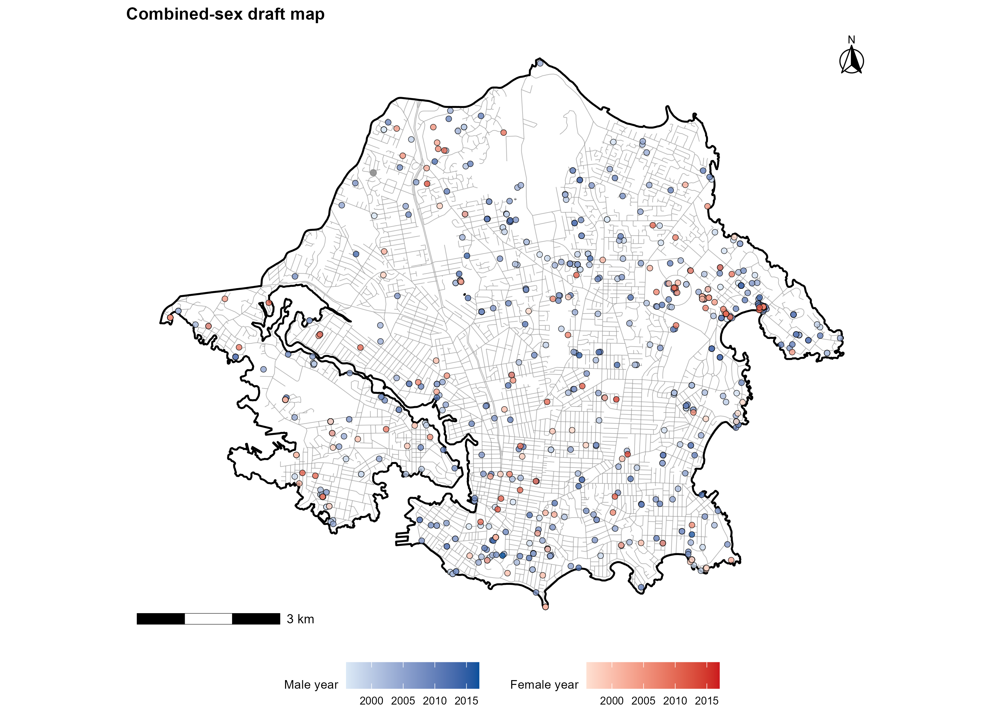
{kind=link}
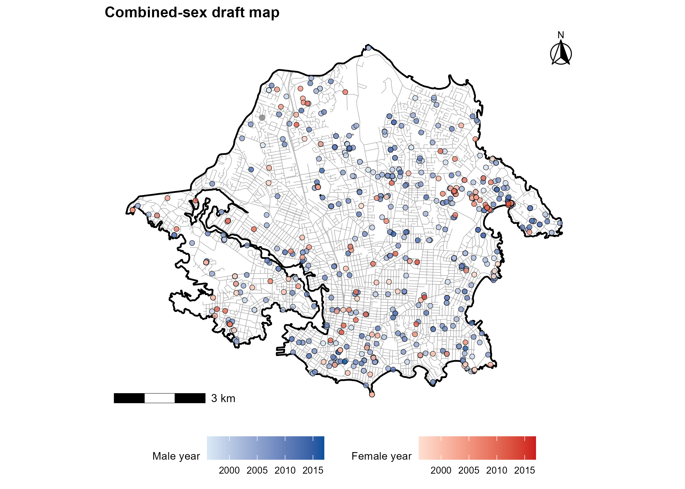
{kind=link}
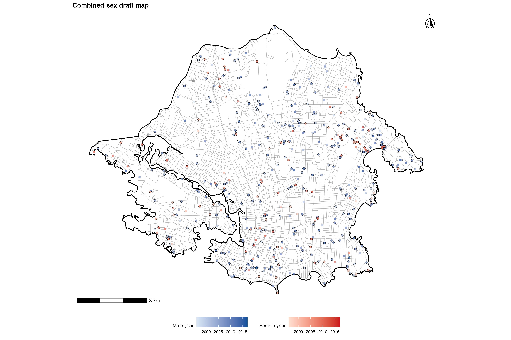
{kind=link}
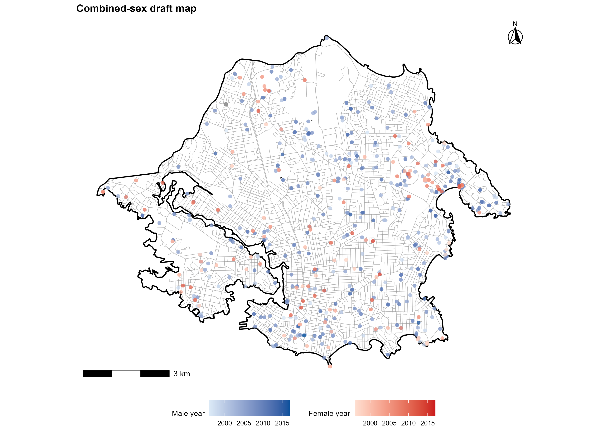
{kind=link}
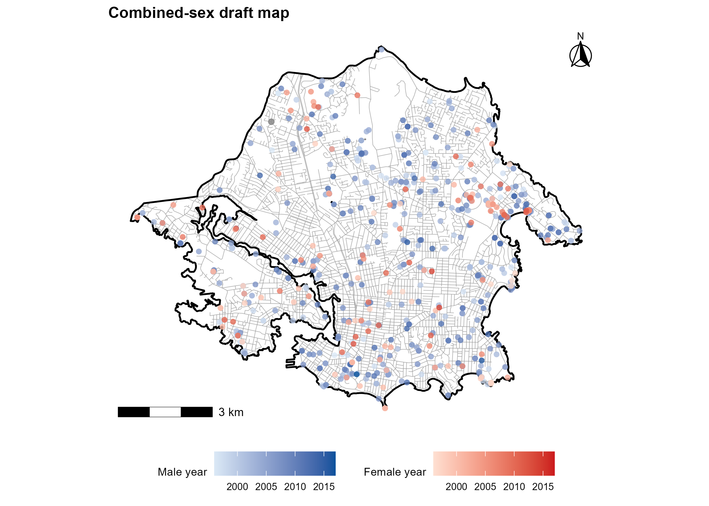
{kind=link}
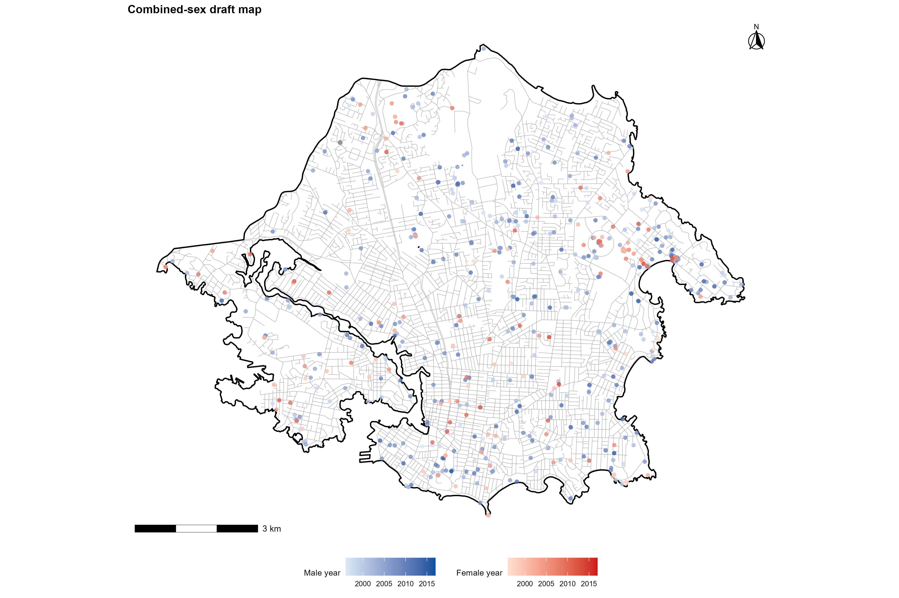
{kind=link}
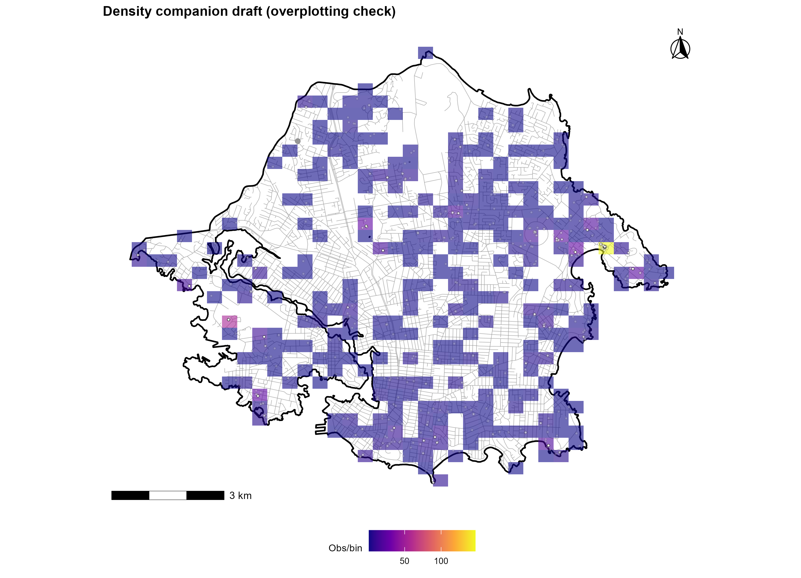
{kind=link}
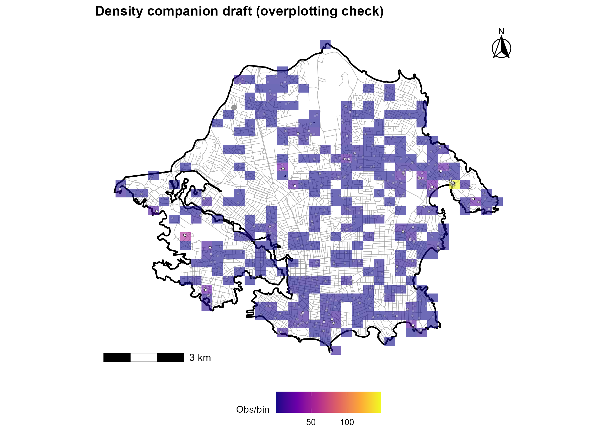
{kind=link}
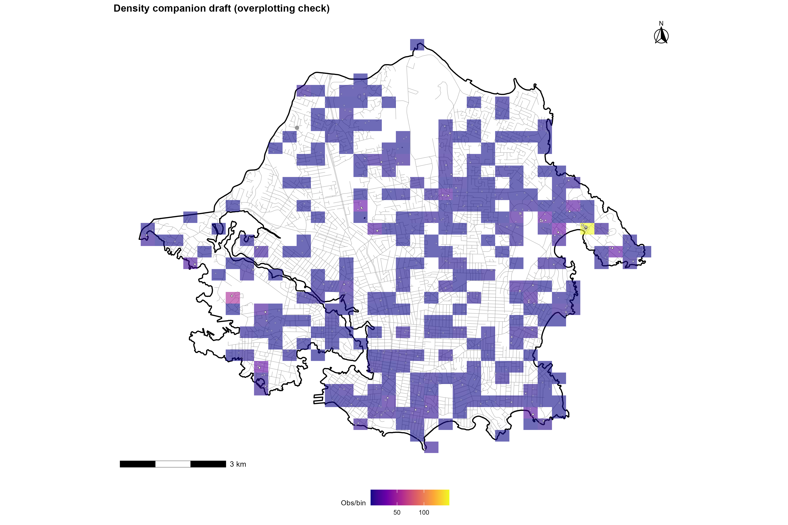
{kind=link}
{kind=link}
Methodology & Code
Spatial point pattern analysis was conducted using the spatstat
package in R. Observation dataset was imported and cleaned, then transformed
to sf objects for mapping and visualization.
# Stage 02: Final map and CSR prep
# Recreates final Figure 1 (outlined two-panel male/female map) from cleaned RDS.
# ==========================================================
# Load required packages and set up environment
# ==========================================================
required_pkgs <- c(
"sf", "ggplot2", "dplyr", "lubridate", "here",
"patchwork", "ggspatial", "scales", "svglite"
)
missing_pkgs <- setdiff(required_pkgs, rownames(installed.packages()))
if (length(missing_pkgs) > 0) {
install.packages(missing_pkgs)
}
invisible(lapply(required_pkgs, library, character.only = TRUE))
# Set the current script location for the here package
here::i_am("R scripts/02_map_and_csr_prep.R")
crs_study_area <- 26910 # NAD 1983 UTM Zone 10N (Standard for BC)
# ==========================================================
# Load the cleaned data and prepare for mapping
# ==========================================================
# Load the project RDS.
rds <- readRDS(here::here("victoria_coha_spatial_distribution.rds"))
# Assign the cleaned data frame to a variable for further processing
obs <- rds$cleaned_export
# Convert the cleaned data frame to an sf object with the specified projected CRS
obs_sf <- obs %>%
dplyr::filter(!is.na(easting) & !is.na(northing)) %>%
sf::st_as_sf(coords = c("easting", "northing"),
crs = crs_study_area, remove = FALSE)
# ==========================================================
# Load and process spatial layers for mapping
# ==========================================================
# Read the study area boundary shapefile and ensure it has the correct CRS
study_boundary <- (sf::st_read(here::here("map_layers", "Study area boundary.shp"), quiet = TRUE))
# FORCE-SET the CRS if it is missing
if (is.na(sf::st_crs(study_boundary))) {
study_boundary <- sf::st_set_crs(study_boundary, crs_study_area)
}
study_boundary <- sf::st_transform(study_boundary, crs_study_area) # Transform the study area boundary to the projected CRS
study_boundary <- sf::st_make_valid(study_boundary) # Ensure the geometry is valid after transformation
study_boundary <- sf::st_union(study_boundary) # Merge all geometries into a single geometry to simplify the boundary
study_boundary <- sf::st_sf(id = 1L, geometry = study_boundary) # Convert the unioned geometry back to an sf object with an ID column for consistency
centreline <- NULL # Initialize the centreline object as NULL before reading the shapefile
centreline <- sf::st_read(here::here("map_layers", "CentreLine_trans.shp"), quiet = TRUE) # Read the centreline shapefile
# FORCE-SET the CRS if missing
if (is.na(sf::st_crs(centreline))) {
centreline <- sf::st_set_crs(centreline, crs_study_area)
}
centreline <- sf::st_transform(centreline, crs_study_area) # Transform the centreline to the projected CRS
centreline <- sf::st_make_valid(centreline) # Ensure the geometry is valid after transformation
centreline <- (sf::st_intersection(centreline, study_boundary)) # Clip the centreline to the study area boundary
keep <- lengths(sf::st_intersects(obs_sf, study_boundary)) > 0 # Keep only the observations that intersect with the study area boundary
obs_sf <- obs_sf[keep, , drop = FALSE] # Subset the observations to keep only those within the study area boundary
# Create a spatstat window object of Victoria, BC
study_window <- spatstat.geom::as.owin(study_boundary)
# Create separate sf objects for male and female observations for plotting
male_sf <- obs_sf %>% dplyr::filter(sex == "male")
female_sf <- obs_sf %>% dplyr::filter(sex == "female")
# Define color ramps for male and female observations
male_cols <- c("#dbe9f6", "#08519c")
female_cols <- c("#fee0d2", "#cb181d")
year_limits <- range(obs_sf$year, na.rm = TRUE)
# Save the relevant objects back into the RDS for future use
rds$obs_sf <- obs_sf
rds$study_boundary <- study_boundary
rds$centreline <- centreline
rds$study_window <- study_window
rds$year_limits <- year_limits
rds$male_cols <- male_cols
rds$female_cols <- female_cols
rds$crs_study_area <- crs_study_area
rds$sex <- obs$sex
bbox_use <- sf::st_bbox(study_boundary) # Get the bounding box of the study area boundary
x_pad <- (bbox_use$xmax - bbox_use$xmin) * 0.01 # Calculate the padding for the x-axis
y_pad <- (bbox_use$ymax - bbox_use$ymin) * 0.01 # Calculate the padding for the y-axis
bbox_use <- sf::st_bbox(
c(
xmin = bbox_use$xmin - x_pad,
ymin = bbox_use$ymin - y_pad,
xmax = bbox_use$xmax + x_pad,
ymax = bbox_use$ymax + y_pad
),
crs = sf::st_crs(bbox_use) # Retain the CRS information for the padded bounding box
)
# Save the padded bounding box into the RDS for future use
rds$bbox_use <- bbox_use
# ==========================================================
# Build the final map figure
# ==========================================================
# Define a base theme for the ggplot maps to ensure consistent styling across the panels
base_theme <- ggplot2::theme_minimal(base_size = 10) +
ggplot2::theme(
panel.grid.major = ggplot2::element_blank(),
panel.grid.minor = ggplot2::element_blank(),
legend.position = "bottom",
legend.box = "horizontal",
legend.title = ggplot2::element_text(size = 8),
legend.text = ggplot2::element_text(size = 7),
plot.title = ggplot2::element_text(face = "bold", size = 11),
axis.title = ggplot2::element_blank(),
axis.text = ggplot2::element_blank(),
axis.ticks = ggplot2::element_blank(),
axis.line = ggplot2::element_blank()
)
# Function that builds a single panel of the map for male/female observations
build_panel <- function(points_sf, title_text, legend_title, ramp) {
ggplot2::ggplot() +
# Coordinate system
ggplot2::coord_sf(
crs = sf::st_crs(bbox_use), # Use the CRS of the padded bounding box
xlim = c(bbox_use$xmin, bbox_use$xmax),
ylim = c(bbox_use$ymin, bbox_use$ymax),
expand = FALSE
) +
# Theme
base_theme +
# Centreline
ggplot2::geom_sf(data = centreline, color = "grey55", linewidth = 0.2, alpha = 0.65) +
# Study Boundary
ggplot2::geom_sf(data = study_boundary, fill = NA, color = "black", linewidth = 0.6) +
# Observation Points
ggplot2::geom_sf(
data = points_sf,
ggplot2::aes(fill = year),
shape = 21,
color = "black",
stroke = 0.25,
size = 1.8,
alpha = 0.8
) +
# Color Scale
ggplot2::scale_fill_gradientn(
colors = ramp,
limits = year_limits,
breaks = scales::pretty_breaks(5),
name = legend_title
) +
# Scale Bar
ggspatial::annotation_scale(
location = "bl",
width_hint = 0.22,
line_width = 0.35,
text_cex = 0.7
) +
# North Arrow
ggspatial::annotation_north_arrow(
location = "tr",
which_north = "true",
style = ggspatial::north_arrow_fancy_orienteering(text_size = 7),
height = grid::unit(0.9, "cm"),
width = grid::unit(0.9, "cm"),
pad_x = grid::unit(0.15, "cm"),
pad_y = grid::unit(0.15, "cm")
) +
# Title
ggplot2::ggtitle(title_text)
}
# Build the figure for male and female observation points
f1 <- (
build_panel(male_sf, "A. Male", "Male year", male_cols)
) + (
build_panel(female_sf, "B. Female", "Female year", female_cols)
) +
patchwork::plot_layout(ncol = 2, guides = "collect") &
ggplot2::theme(legend.position = "bottom")
# ==========================================================
# Save the final figure in multiple formats and save the updated RDS
# ==========================================================
output_dir <- here::here("output", "figures") # Directory to save the final map figures
png_out <- here::here(output_dir, "Victoria_COHA_dist_mf.png")
tiff_out <- file.path(output_dir, "Victoria_COHA_dist_mf.tiff")
svg_out <- file.path(output_dir, "Victoria_COHA_dist_mf.svg")
ggplot2::ggsave(png_out, plot = f1, width = 9, height = 6.5, units = "in", dpi = 350, bg = "white")
ggplot2::ggsave(tiff_out, plot = f1, width = 9, height = 6.5, units = "in", dpi = 350, compression = "lzw", bg = "white")
ggplot2::ggsave(svg_out, plot = f1, width = 9, height = 6.5, units = "in", device = svglite::svglite, bg = "white")
saveRDS(rds, here::here("victoria_coha_spatial_distribution.rds"))